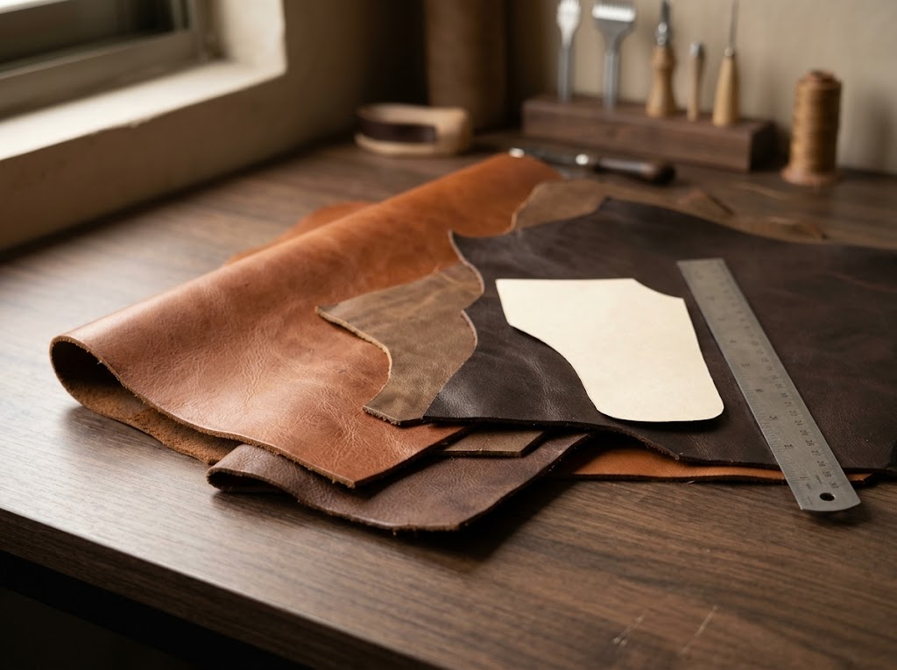

Material character
Grain, feel, flexibility, and finish influence how leather looks and performs.
ABOUT PERFECT LEATHER
A leather goods business grounded in material, utility, and the small details that make a product feel considered.

OUR APPROACH
Perfect Leather is based at Plot No E89 Sector 22 Korangi Industrial Area Karachi, Pakistan. This website presents a range of leather goods and an introduction to the craft and processes commonly involved in making them.
We believe a well-considered leather product begins with the material and continues through its construction: the cut, the stitch, the edge, the hardware, and the way each part works together.
Browse the collection and contact us to discuss your requirements. Product styles shown here are illustrative and do not confirm current availability.
WHAT WE VALUE
Grain, feel, flexibility, and finish influence how leather looks and performs.
Useful forms and thoughtful details help everyday products work beautifully.
Edges, seams, hardware, and construction details contribute to the final impression.